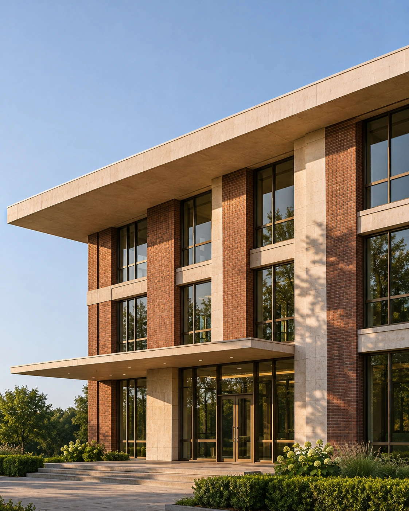
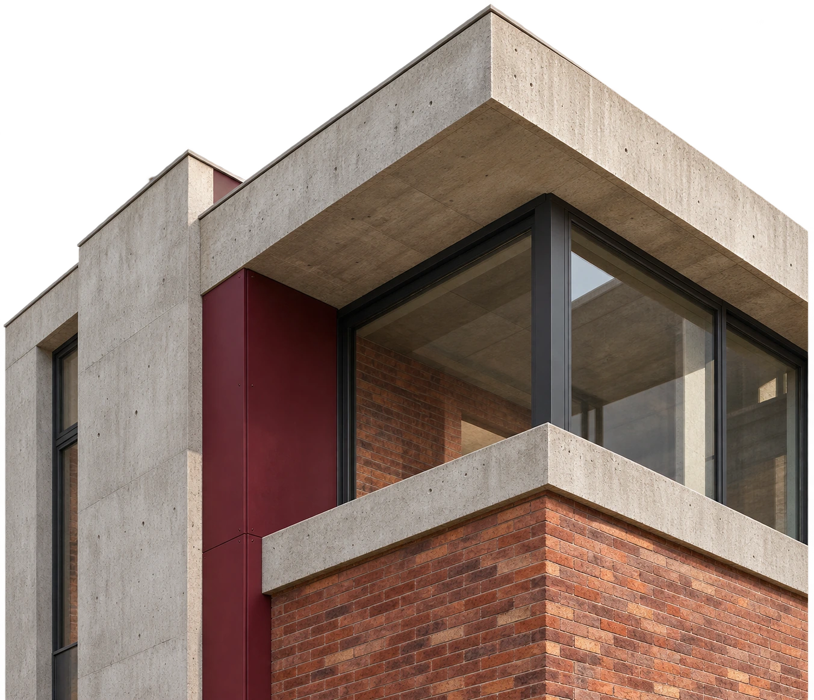
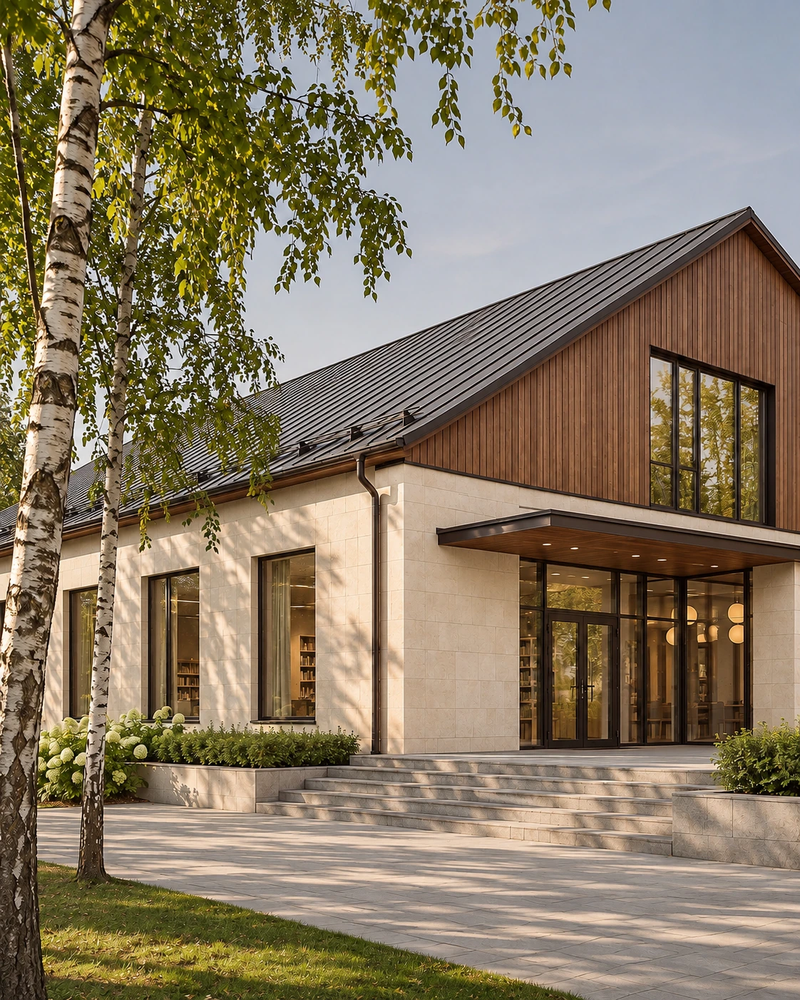
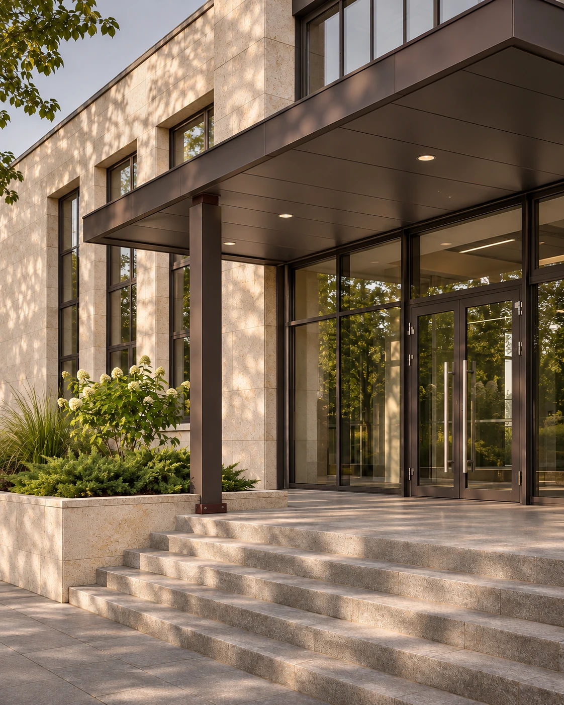
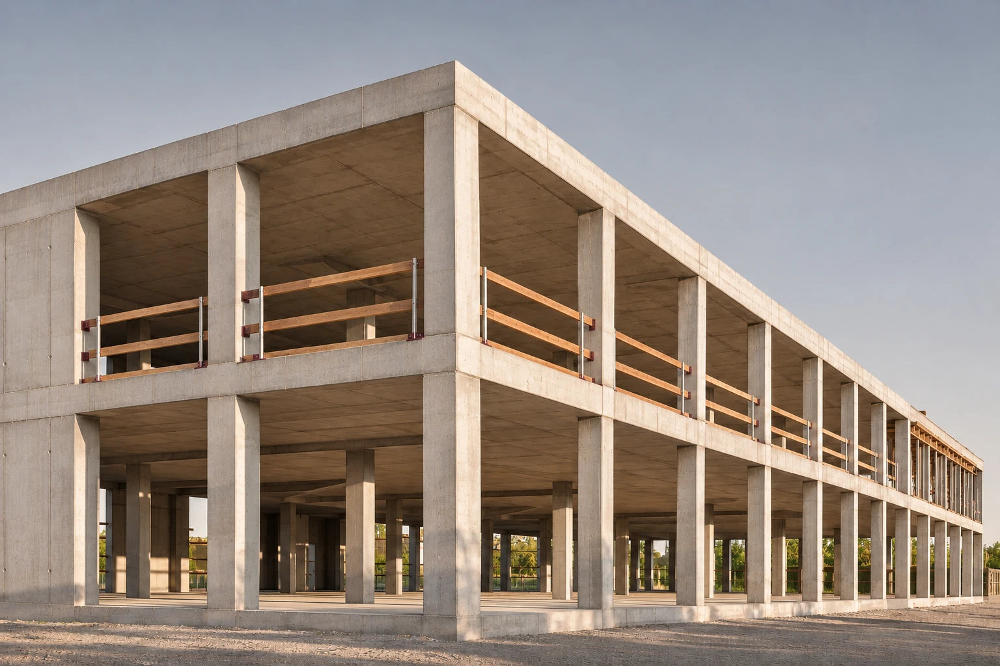
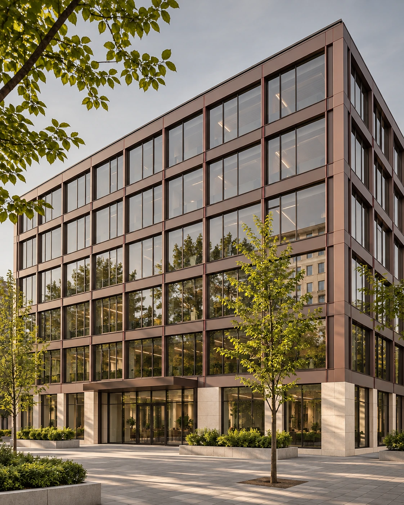
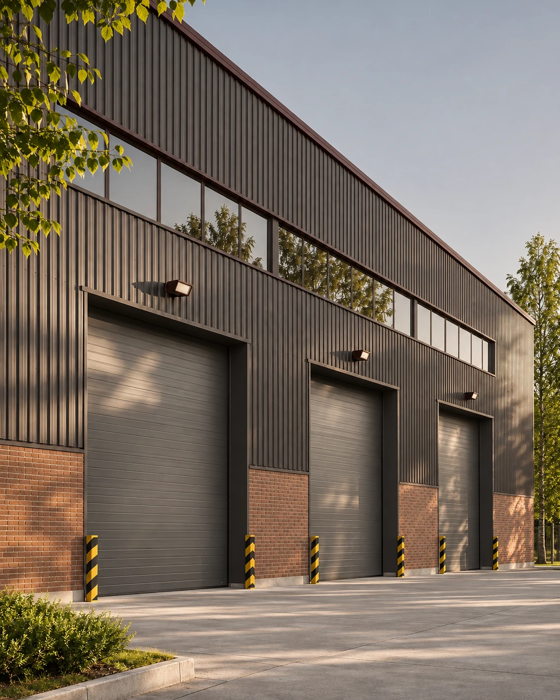
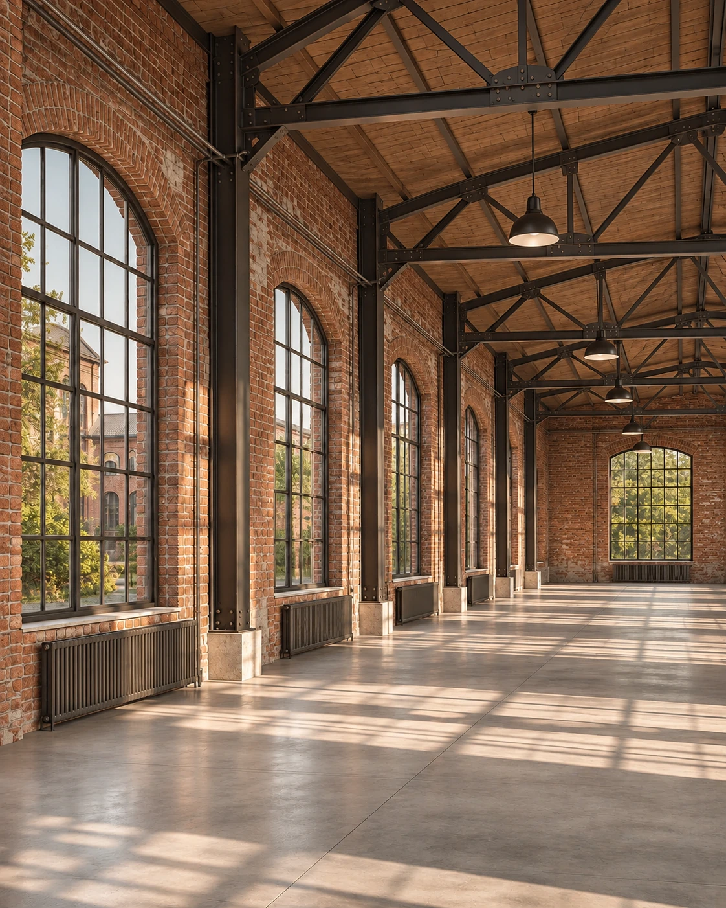
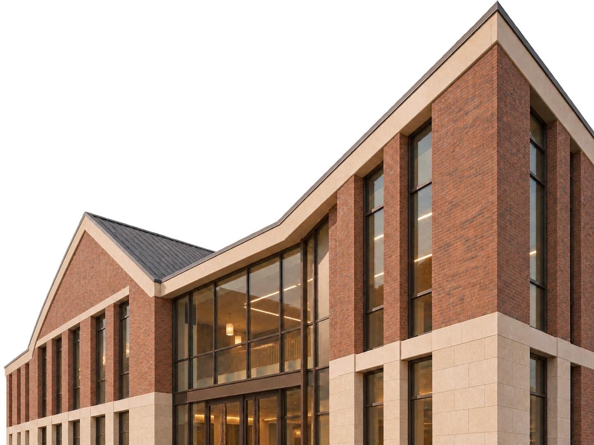

Технический
заказчик
Сопровождаем проект целиком или подключаемся к отдельной задаче. Готовим документы, координируем подрядчиков, контролируем сроки и качество работ.
Обсудить задачу
Берём на себя документацию, проектирование и организацию работ. Представляем интересы заказчика, контролируем сроки, бюджет и качество.


Услуги
Сопровождаем проект целиком или подключаемся к отдельной задаче. Готовим документы, координируем подрядчиков, контролируем сроки и качество работ.
Обсудить задачуПроверяем качество и объём работ, определяем причины дефектов и стоимость их устранения.

Архитектура, конструкции и инженерные системы. Проектная и рабочая документация.

О компании









Сопровождение проекта
Готовим исходные документы, сопровождаем проектирование, координируем подрядчиков и проверяем выполненные работы перед приёмкой.

Первый этап
Обсуждаем объект, изучаем документы и уточняем, какая помощь нужна. Определяем, каких исходных данных не хватает.
Второй этап
Предлагаем состав услуг. Вместе определяем объём, последовательность действий, сроки и результат, который вы получите.

Третий этап
Готовим проектные решения, координируем участников или проводим экспертизу. Обсуждаем с вами вопросы, влияющие на дальнейшую работу.

Четвёртый этап
Передаём документацию, отчёт или экспертное заключение. При сопровождении строительства участвуем в приёмке и передаче объекта.
Проекты
Жилые, общественные
и промышленные здания.Демонстрационные примеры